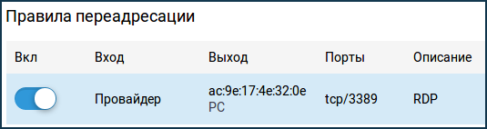
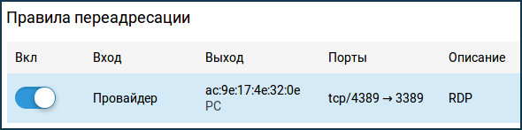

Переадресация портов
Обновлено 25.04.2022
По умолчанию в интернет-центрах Keenetic запрещены входящие подключения из Интерне к компьютерам или сетевым устройствам домашней сети. Предположим, у вас дома работает веб-камера и подключена через Keenetic к Интернету. Компьютеры домашней сети смогут подключиться к ней, а вот подключиться из Интернета к веб-камере без переадресации портов не получится. В этом случае иногда говорят "нужно открыть порт на роутере". Термин "переадресация портов" иногда заменяют на аналогичные "проброс портов", "перенаправление портов" или "трансляция портов".
Переадресация портов является частью механизма NAT (трансляции сетевых адресов). Задачей переадресации портов является предоставить доступ из Интернета к сервисам вашей сети, используя открытый порт.
Используя службу UPnP устройства домашней сети могут сами разрешить необходимые им подключения. UPnP позволяет программно перенаправлять порты. Сейчас торрент-клиенты, мессенджеры, игровые консоли, медиасерверы и другие используют UPnP. Включите службу UPnP на устройстве домашней сети или в приложении. Чтобы Keenetic принимал настройки по UPnP, необходимо лишь убедиться, что установлен компонент системы "Служба UPnP", который позволит автоматически настраивать необходимые правила NAT и межсетевого экрана. Сделать это можно на странице "Общие настройки" в разделе "Обновления и компоненты", нажав на "Изменить набор компонентов".
В некоторых случаях может требоваться открыть определенные порты вручную. Например, чтобы предоставить доступ из Интернета на сетевое хранилище (NAS) или сервер (WWW, FTP и др.) локальной сети; предоставить удаленный доступ из Интернета на компьютер домашней сети, используя специальные службы для удаленного подключения рабочих столов (Remote Desktop из состава ОС Windows, или через программы Radmin, VNC и др.); выполнить подмену номера порта назначения (маппинг порта) для обращения на другой порт.
Важно! Переадресация портов будет работать только в том случае, если интернет-центр использует белый (публичный) IP-адрес для выхода в Интернет. Дополнительную информацию вы найдете в статье "В чем отличие "белого" и "серого" IP-адреса?"
Совет: Перед настройкой переадресации портов, выясните, какой именно протокол и номер порта используется в приложении, на сетевом устройстве или сервере. Обычно, эту информацию можно найти в меню настроек или в документации. Если вы не знаете, какой номер порта используется, обратитесь за информацией на сайт http://www.portforward.com/cports.htm. Там вы найдете список наиболее популярных приложений, протоколов и их номера портов.
Рассмотрим пример настройки переадресации портов в интернет-центре Keenetic.
Предположим, нужно предоставить доступ для подключения из Интернета к домашнему компьютеру через приложение (сервер) ОС Windows "Подключение к удаленному рабочему столу" (Remote Desktop; RDP).
В настройках Keenetic нужно будет открыть определенный TCP/UDP-порт, который используется для входящих подключений. В нашем примере RDP по умолчанию использует номер порта TCP 3389.
Зарегистрируйте устройство в домашней сети, на которое будет осуществляться переадресация портов. При регистрации нужно включить опцию "Постоянный IP-адрес", чтобы компьютер в домашней сети всегда получал один и тот же IP. Дополнительную информацию вы найдете в статье "Регистрация устройств в домашней сети".
1. Переадресация портов.
Перейдите на страницу "Переадресация" и нажмите "Добавить правило".
В появившемся окне "Правило переадресации портов" выполните настройку правила.
Выберите интерфейс или задайте подсеть для входящего трафика, протокол и порт, который нужно пропускать в локальную сеть. Выберите устройство или интерфейс, которому будет переадресован подходящий трафик.
Нужно правильно указать значение поля "Вход". В этом поле нужно выбрать подключение или интерфейс, через которое Keenetic получает доступ в Интернет. В большинстве случаев следует выбирать интерфейс "Провайдер". Если у вас подключение к Интернету осуществляется через PPPoE, PPTP или L2TP, нужно выбрать соответствующее подключение. При подключении к Интернету через USB-модем 3G/4G следует указать именно это подключение, а при подключении через WISP, выберите подключение с названием сети, к которой подключается Keenetic.
В поле "Выход" выберите устройство, подключение или интерфейс, которому будет переадресован подходящий трафик (в нашем примере это зарегистрированный в домашней сети компьютер PC). В поле "Выход" можно выбрать значение "Другое устройство" и указать IP-адрес. При выборе значения "Этот интернет-центр" адресом назначения будет являться сам Keenetic.
В поле "Протокол" можно указать протокол из списка предустановленных, который будет использован при переадресации порта. Если же выбрать значение "TCP" или "UDP", можно вручную указать номер порта или диапазон портов (в нашем примере используется протокол "TCP" и в поле "Открыть порт" указан порт приложения 3389).
В поле "Расписание работы" можно добавить расписание, по которому будет работать данное правило.

Важно! Для проверки работоспособности переадресации портов вы можете обратиться к WAN-интерфейсу роутера из Интернета. Также это можно сделать из локальной сети, т.к. в Кинетике по умолчанию в сегменте "Домашняя сеть" включен механизм обратной трансляции адресов NAT loopback.
Теперь для подключения к рабочему столу из Интернета, нужно будет использовать адрес вида WAN_IP-адрес_Keenetic:номер_порта
Например: 109.210.53.211:3389
Важно! Дополнительную настройку межсетевого экрана производить не нужно, т.к. при использовании правила переадресации интернет-центр самостоятельно открывает доступ по указанному порту.
Совет: Если нужно открыть диапазон портов, при создании правила переадресации в опции "Тип правила" выберите значение "Диапазон портов" и в полях "Открыть порты" впишите начальный и конечный номер диапазона. Например, для открытия диапазона TCP-портов 45000 - 65000 создано следующее правило:
2. Переадресация портов с подменой номера порта назначения (маппинг порта).
Иногда возникает ситуация, когда нужно выполнить подмену одного номера порта X на какой-то другой Y. Подмена порта может использоваться в случае блокировки распространенных номеров портов на стороне провайдера или когда нужные номера портов уже заняты.
2.1. Рассмотрим пример, когда сервер RDP работает по номеру порта TCP 3389, а обращение к нему из Интернета будет идти на порт с новым номером 4389. В этом случае входящее на внешний WAN IP-адрес подключение на порт 4389 будет перенаправлено на определенный локальный IP-адрес и порт 3389.
В поле "Открыть порт" укажите новый порт назначения (для обращений из Интернета), а в поле "Порт назначения" впишите настоящий номер порта, который используется на сервере в локальной сети.
Важно! При создании правила переадресации портов подмена порта будет работать только в направлении из WAN в LAN (из Интернета в локальную сеть).

Теперь для подключения к рабочему столу из Интернета, нужно будет использовать адрес вида WAN_IP-адрес_Keenetic:новый_номер_порта
Например: 109.210.53.211:4389
2.2. Рассмотрим пример, когда две одинаковые IP-камеры (с IP-адресами 192.168.1.101 и 192.168.1.102) находятся в локальной сети интернет-центра Keenetic и их веб-интерфейсы доступны по 80-му порту. Нужно настроить удаленный доступ из Интернета к IP-камерам.
В этом случае используем маппинг портов, чтобы веб-интерфейс первой камеры был доступен при обращении из Интернета по порту 10101, а вторая камера по порту 10102.
Теперь для подключения к IP-камерам из Интернета, нужно будет использовать адрес вида WAN_IP-адрес_Keenetic:новый_номер_порта
Например: 109.210.53.211:10101 для доступа к первой камере и 109.210.53.211:10102 для доступа ко второй камере.
Советы:
Если переадресация портов по какой-то причине не заработала, обратитесь к статье "Что делать, если не работает переадресация портов?".
Иногда возникает задача в локальной сети интернет-центра Keenetic организовать DMZ-хост (это может быть веб-сервер, сетевой видеорегистратор, IP-камера или другое устройство), у которого открыты все порты и таким образом предоставить полный доступ к нему из Интернета: "Переадресация всех портов на хост локальной сети (организация DMZ-хоста)".
Ознакомьтесь со статьей "В каких случаях следует использовать правила переадресации портов и межсетевого экрана?".
Дополнительная информация для подключения игровых приставок: "Использование Xbox и PS4 при подключении через Keenetic".
При наличии публичного белого IP-адреса для доступа в Интернет с помощью настройки переадресации портов можно организовать удаленный доступ к устройству локальной сети: "Доступ из Интернета к IP-камере, подключенной к интернет-центру".
�